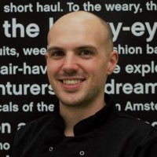

|  |
Grant D. Reid
Den Haag, Netherlands
Aspiring Junior Python Developer
|
The last couple of years have presented many challenges, but it also has
presented many opportunities. For myself, the biggest opportunity was being
able to ask myself the question "What direction do I want to take in life?"
Life giving me the time to really tackle the question and find my own answer
was a great opportunity and I decided to grab the bull by the horns.
I have recently left my previous employment in order to focus on studying
Python in the hope that I can find my way into a new career that scratches
my problem solving itch.
Education
-
100 Days of Code: Python Bootcamp
Udemy - Dr Angela Yu
Present
- NT2 Beginners Nederlands
Universiteit van Amsterdam
2015
- Artificial Intelligence, BSc (incomplete)
Aberdeen University
2012
- Computing, Higher National Certificate (eq. HBO)
Aberdeen College
2010
- Acting and Performance, Higher National Certificate (eq. HBO)
Aberdeen College
2008
- Information Systems, Higher (eq. HAVO/VWO)
Turriff Academy
2007
Work Experience
| Date |
Job Title |
Company |
| 2019-2021 |
Catering Specialist |
CitizenM, Voorschoten |
| 2016-2019 |
Chef |
Aran Irish Pub, Amsterdam |
| 2016 |
UK Reviewer |
Roamler, Amsterdam |
| 2007-2015 |
Sales Assistant |
Celebrations of Turriff, Aberdeenshire |
Skills
| Windows |
⭐⭐⭐⭐⭐ |
| Linux |
🐧🐧🐧 |
| Hardware |
⭐⭐⭐⭐⭐ |
|
| Python |
🐍🐍🐍 |
| HTML |
⭐⭐⭐ |
| CSS |
⭐⭐ |
|
Languages
| English (Native) |
⭐⭐⭐⭐⭐ |
| Dutch (Niet verschrikkelijk) |
⭐⭐ |
|
| Indonesian (Sedikit aja) |
⭐⭐ |
| German (Sauschlecht) |
⭐ |
|